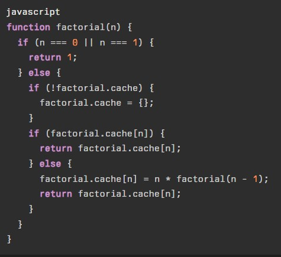

Memoization
Se trata de un concepto de aplicable en JavaScrip que es sorprendentemente desconocida, ya que por lo general solo es utilizado por aquellos con un gran dominio del lenguaje, lo que esta funcionalidad es acortar tiempos de ejecución de una tarea repetitiva, para que de ese modo la experiencia del usuario sea muco más optima.
Esto se logra agregando valores a un array asociativo(comunmente se les llama "cache"), para que en caso de que ese valor este asociado a un elemento almacenado previamente este se pueda mostrar sin tener que realizar el proceso nuevamente.
Nota: un array asociativo es aquel en el que se define un nombre que hara la función de indice para el dato, es decir el nombre que se le defina a cada posición del array estara vinculado a ese respectivo valor.
Ejemplo

En este ejemplo se puede apreciar como se ejecuta el concepto de memoization de una forma bastante simple, una vez se define que el valor de "n" no es 0 o 1 se porcede a desarrollar una estructura de condicionales, en los cuales si no existe el array (cache) se crea, por otro lado si el valor ya existe se muestra y por ultimo si este valor no existen se asigna el nombre para el indice del dato y se asigna el valor para este.
De ese modo el dato estara disponible dentro del array, lo que permitira obtener este valor solo con buscarlo en el array en vez de realizar un proceso completo, esta tecnica es recomendable para aquellos casos en los que se tenga la certesa de que un dato se repetira numerosas veces, a la vez que si este requiere de un proceso complejo o largo para obtenerlo.
De ese modo al ejecutar el proceso una vez, se almacenara en el array asociativo,pirmitiendo que las futuras ocaciones en las que se requiera el dato este se obtenga casi inmediantamente.
Para este tipo de porcesos tambien es una alternativa el usar "web workers", sin embargo esta tecnica consume muchos menos recursos, de cualquier forma el usar ambos conceptos es completamente posible.